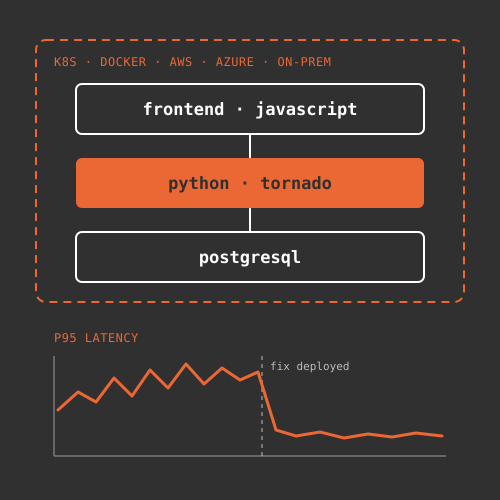

Software Engineer, 2021 – Present

Dec 2021 – Present
Feb 2021 – Dec 2021
L7 Informatics builds L7|ESP, a platform that clinical diagnostics, genomics and medicine manufacturing labs use to run their lab information management (LIMS), manufacturing execution (MES) and electronic lab notebook (ELN) workflows in one place. I have worked there as a Python and JavaScript software engineer since February 2021, based in Austin, Texas. My work falls into three areas: the Python web application itself, the performance and infrastructure problems that come with running it, and coaching the customer developers who build on top of it.
I started as a Senior Application Engineer, writing Python and JavaScript integrations for bioinformatics lab equipment and processes. That meant Python scripts for lab automation, such as generating reports, triggering emails, ingesting analysis spreadsheets and connecting to outside APIs. I also added API endpoints in Python's Tornado framework, built custom frontends and UI extensions, and deployed builds to test and production Linux servers. It was a fast way to learn how labs actually use the software, and that has shaped everything I've done since.
As Lead Software Maintenance Engineer, I spend much of my time finding and fixing scalability and availability problems in the Python web application and its PostgreSQL databases. My favorite kind of problem is the mystery slowdown, where production gets slow and nobody knows why. I start with metrics in Prometheus and Grafana to see when and where it happens. Then I profile the running app with py-spy or cProfile and check the database with pg_stat_statements and EXPLAIN until the evidence points to a cause.
The cause is usually one of a few things. It might be a slow PostgreSQL query from a missing index, an N+1 pattern or an ORM-generated query that does far more work than it needs to. It might be blocking work in Tornado's event loop that stalls every other request on that worker. Sometimes the app runs short of memory or database connections, or table bloat builds up faster than autovacuum can clear it. Large data loads, like bulk ingests of sample and instrument data or big reports and exports, bring their own problems. Once a fix ships, I go back to the same metrics to confirm it worked.
L7|ESP runs in many kinds of environments, from on-premises VMs to Kubernetes clusters in Amazon Web Services and Azure. I test and develop deployments with Docker, Docker Compose and Kubernetes, and I maintain Helm charts and Kubernetes manifests. When a customer's environment misbehaves, I help troubleshoot it directly. That usually means working out where the infrastructure, the database and the application are getting in each other's way.
The other half of my role is developer advocacy. Labs have their own developers who build integrations, scripts and frontends on L7|ESP and connect it to external APIs. I pair with them one on one, review their code, run training sessions and write documentation and example code. When a support case turns into a hard problem, I take it as an escalation, solve it, and then turn what I learned into guidance so the next team doesn't run into it.
The two halves feed each other. Performance work shows me where the platform needs to be faster and sturdier, and coaching shows me where developers get stuck. Both help labs spend less time fighting their software and more time on their science.